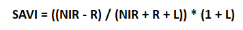

Calculate Vegetation/Forest Degradation#
Contents
Watch the video below for an introduction to Vegetation/ Forest degradation monitoring using MISLAND QGIS Plugin.
Compute Vegatation Indices#
Land degradation hotspots (LDH) are produced via the analysis of time-series vegetation indices data and are used to characterize areas of different sizes, where the vegetation cover and the soil types are severely degraded. Vegetation loss/gain hotspots will be calculated based on time series observation of selected suit of vegetation indices depending on the climatic zones and terrain morphology of the North African countries
Vegation Indices computed from Landsat 7 ETM+ include:
NDVI (humid, sub-humid and semi-arid zones)
DVI is preferable for global vegetation monitoring since it helps to compensate for changes in lighting conditions, surface slope, exposure, and other external factors. NDVI is calculated in accordance with the formula:
NIR – reflection in the near-infrared spectrum RED – reflection in the red range of the spectrum
According to this formula, the density of vegetation (NDVI) at a certain point of the image is equal to the difference in the intensities of reflected light in the red and infrared range divided by the sum of these intensities.
This index defines values from -1.0 to 1.0, basically representing greens, where negative values are mainly formed from clouds, water and snow, and values close to zero are primarily formed from rocks and bare soil. Very small values (0.1 or less) of the NDVI function correspond to empty areas of rocks, sand or snow. Moderate values (from 0.2 to 0.3) represent shrubs and meadows, while large values (from 0.6 to 0.8) indicate temperate and tropical forests.
MSAVI2 (arid and stepic zones)
MSAVI2 is soil adjusted vegetation indices that seek to address some of the limitation of NDVI when applied to areas with a high degree of exposed soil surface.It eliminates the need to find the soil line from a feature-space plot or even explicitly specify the soil brightness correction factor:
SAVI (desert areas)
SAVI is used to correct Normalized Difference Vegetation Index (NDVI) for the influence of soil brightness in areas where vegetative cover is low. Landsat Surface Reflectance-derived SAVI is calculated as a ratio between the R and NIR values with a soil brightness correction factor (L) defined as 0.5 to accommodate most land cover types.

Compute Forest Fires#
Burnt areas and forest fires are be highlighted and mapped out form remotely sensed Landsat 8 /Sentinel 2 data using the Normalized Burn Ratio (NBR). NBR is designed to highlight burned areas and estimate burn severity. It uses near-infrared (NIR) and shortwave-infrared (SWIR) wavelengths. Before fire events, healthy vegetation has very high NIR reflectance and a low SWIR reflectance. In contrast, recently burned areas show low reflectance in the NIR and high reflectance in the SWIR band.
The NBR is be calculated for Landsat/Sentinel images before the fire (pre-fire NBR) and after the fire (post-fire NBR). The difference between the pre-fire NBR and the post-fire NBR referred to as delta NBR (dNBR) is computed to highlight the areas of forest disturbance by fire event.
Classification of the dNBR is be used for burn severity assessment, as areas with higher dNBR values indicate more severe damage whereas areas with negative dNBR values might show increased vegetation productivity. dNBR is classified according to burn severity ranges proposed by the United States Geological Survey(USGS)
Compute Forest Change and Total Carbon & Summary#
The quantification of the forest gain/loss hotspots will be based on pre-existing high-resolution global maps derived from Hansen Global Forest change dataset that can be accessed using Google Earth Engine API. The maps are produced from time-series analysis of Landsat images characterizing forest extent and change over time.